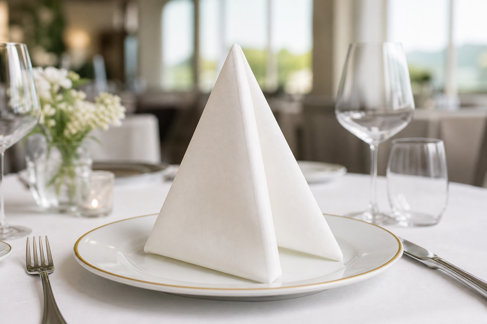
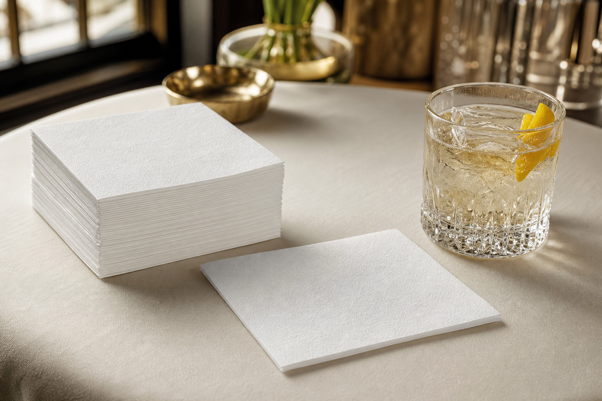
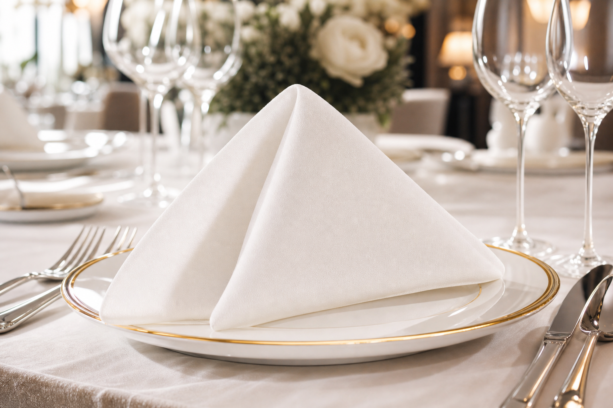
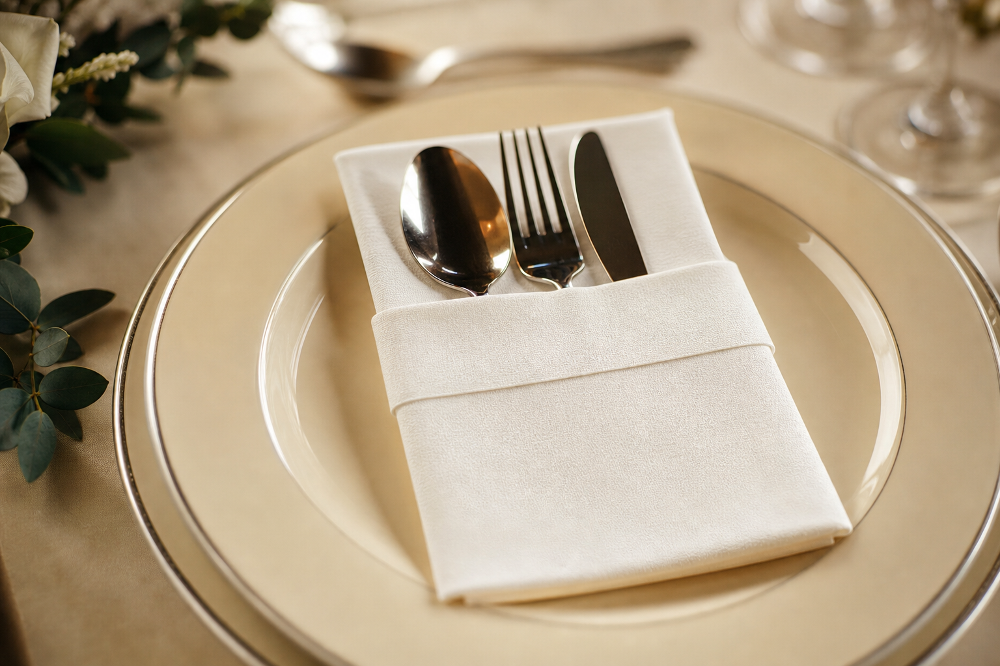

Ultra absorbent
Airlaid cellulose structure is engineered for fast pickup—ideal for beverages, sauces, and full-service dining.

Premium airlaid napkins for hospitality — cloth-like handfeel and dependable supply from Bengaluru, India.
Airlaid cellulose structure is engineered for fast pickup—ideal for beverages, sauces, and full-service dining.
Soft airlaid nonwoven gives napkins a fabric-like handfeel guests associate with premium tables.
Fibre-based airlaid napkins balance hygiene with responsible single-use hospitality practice.
Airlaid is a dry-laid nonwoven: cellulose fibres are bonded (often with latex or thermal bonding) without turning them into conventional wet-laid paper. The result is bulkier sheet stock than tissue — the usual basis for a quality airlaid napkin.
For hospitality buyers comparing an airlaid supplier, the practical checks are absorbency, lint, handfeel, napkin size, and batch consistency — not marketing claims alone.
Below are the core SILQUE airlaid napkin formats referenced by hospitality teams when standardising table settings.

Compact airlaid napkin for counter and tray service where footprint matters.

Larger airlaid napkin for full-service tables and Indian dining gravies.

Airlaid napkin format with organised cutlery presentation for high-volume lines.
SILQUE is based in Bengaluru, Karnataka, India, and focuses on airlaid napkins for commercial hospitality — not consumer retail storytelling. We publish technical context on airlaid so buyers can compare suppliers on substance.
Who we support: hotels, restaurants, cafés, caterers, banquet operators, and distributors sourcing verified airlaid napkin specifications.
Airlaid is a bonded cellulose nonwoven used for absorbent sheet products. For dining, it is the standard basis of a premium disposable airlaid napkin.
An airlaid napkin is a napkin made from airlaid web rather than thin creped tissue. It is chosen when absorbency and handfeel must read closer to cloth.
Ask for fibre and bonding approach, lint behaviour, basis weight or thickness targets, napkin dimensions, pack counts, and consistency commitments — then validate with samples.
SILQUE manufactures and supplies airlaid napkins from Bengaluru, serving buyers across India. Official contact is listed below.
For airlaid napkin specifications and enquiries, use either email or WhatsApp — whichever is easier for your team.